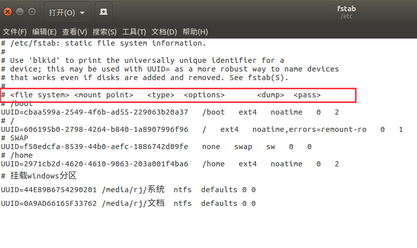

ubuntu日常使用中，总是出现各种奇怪的小问题。每次解决后，过段时间再次出现就忘记了，所以单独列一片文章来总结各种问题，以便日常办公。记录日常的问题。
问题1:键盘无法输出特殊字符
键盘使用中shift+特殊字符，输出为其他字符。例如1
shift+3 //输出为其他字符，而不是#
fctix默认键盘配置问题，需要选择默认键盘为美式，不要选择德式什么的，那样会变成奇怪的字符。
问题2：window下编码与ubuntu下编码问题
windows中文使用的是gb2312编码，当文件在ubuntu打开，运行代码后会提示utf-8编码问题。1
UnicodeDecodeError: 'utf-8' codec can't decode byte 0xd5 in position 10: invalid continuation byte
解决办法：
ubuntu下使用inconv转换文件的编码方式。1
2
3
4iconv -f encoding [-t encoding] [inputfile]... //-f encoding :把字符从encoding编码开始转换。 -t encoding :把字符转换到encoding编码。
例如：
iconv -f gb2312 -t utf-8 student.txt > student1.txt
问题3：ubuntu开机自动挂在分区
双系统，一个windows，一个ubuntu。实现ubuntu开机自动挂在分区。
fstab格式：1
2
3
4
5
6
7file system: 分区定位，可以是磁盘号，或UUID
一般用uuid，用磁盘号维护时可能错乱。
mount point: 挂载点，如:/mnt/winc
type: 挂载磁盘类型，根据实际情况填写，linux是ext4, windows是ntfs
options:挂载参数，一般为defaults
dump: 磁盘备份，默认为0,不备份
pass: 磁盘检查，默认不检查，0表示不检测。

实现步骤：
一、查看磁盘的UUID
sudo blkid
二、创建挂载点
我只挂在文档、系统两个盘符。所以在media/rj/下创建两个挂点。
sudo mkdir /home/rj/{系统,目录}
可根据自己的实际情况创建挂载点。
三、编辑/etc/fstab文件1
2
3sudo gedit /etc/fstab
UUID=44E89B6754290201 /media/rj/系统 ntfs defaults 0 0
UUID=0A9AD66165F33762 /media/rj/文档 ntfs defaults 0 0
四、挂载
mount -a #挂载之后，检查一下有没有编写错误的